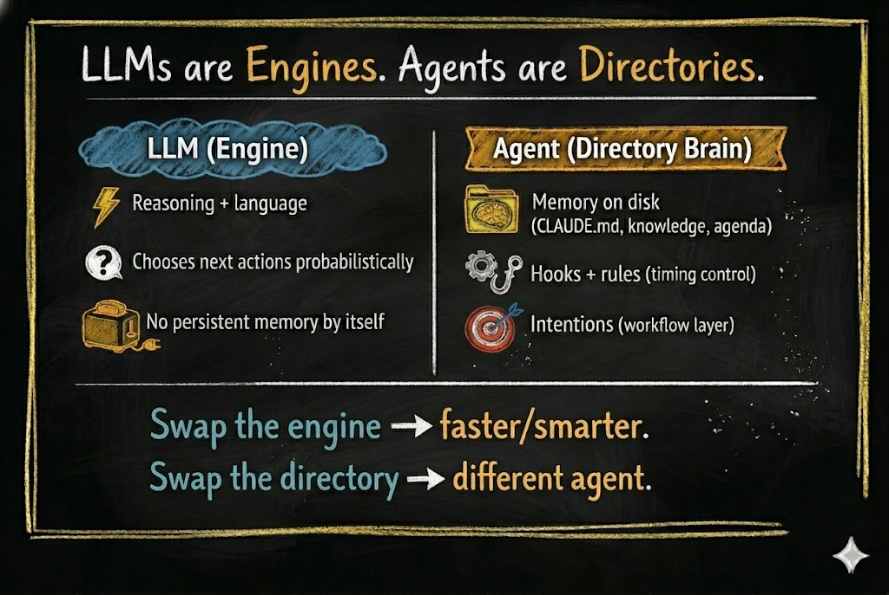
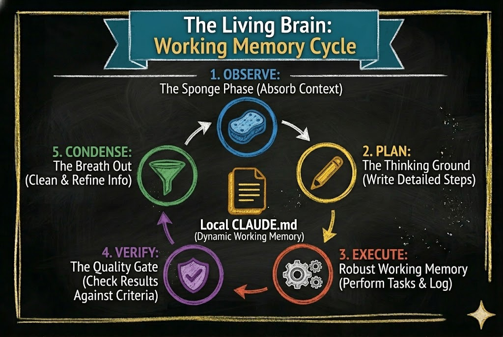
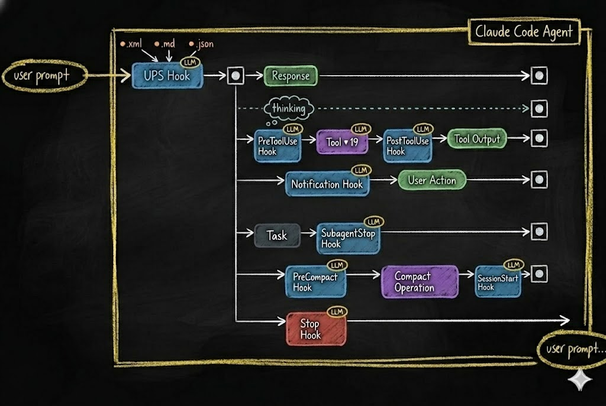

LLMs Are Not the Agents
LLMs are electricity. Agents are toasters.
Electricity is one of the most powerful forces on the planet. It can heat a room, run a hospital, or power a city. But plug it into nothing and it just arcs. It needs a structure to become useful.
A toaster is a simple structure. It takes raw electrical energy and channels it into a specific, repeatable outcome — toast, every time. Not because electricity "decided" to make toast. Because the wires, the timer, and the slots shaped the energy into a predictable result.
This is the relationship between an LLM and an agent.
The LLM provides raw reasoning power. It can write, analyze, plan, and create. But without structure, the token stream it produces can flow in any direction. The agent provides the structure. It channels that stream into consistent, reliable behavior.
Most people building with AI today are staring at the electricity and wondering why it does not make toast on its own.
The Misunderstanding
When people say "AI agent," they almost always mean the model. Claude, GPT, Gemini — pick your favorite. They point at the LLM and say: "That is my agent."
That is the root misunderstanding.
The model is not the agent. The model is the engine — a token generator that produces text one piece at a time based on patterns in its training data. It can reason, analyze, and create. But on its own, a token generator does not form memories, build identity, learn from experience, or maintain consistency across sessions. Those require something outside the model.
A jet engine sitting on the ground is incredibly powerful — but it is not an airplane.
Here is what happens when you treat the LLM as the agent:
- No memory between sessions. The model forgets everything when the conversation ends. Every session starts from zero.
- No consistent behavior. The same prompt can produce different results on different days. There are no habits, only probabilities.
- No identity. The model does not know who "it" is in the context of your project. It adapts to whatever you tell it in the moment.
- No growth. The model cannot learn from its own experience. It cannot refine itself over time. It cannot get better at your specific tasks.
If your "agent" loses everything when you close the chat session, you do not have an agent. You have a very expensive autocomplete.
The real agent is something else entirely.
What Is an Agent, Really?
An agent is the engine plus a local brain.
The most direct way to build that brain today is with a CLI agent — a program that sits in a folder on your computer, reads and writes files in that folder, and can be controlled by the content of those files. Think of it as a general-purpose file manager powered by an LLM.
Current tools — Claude Code, OpenCode, Gemini CLI — are marketed toward technical users. The names suggest it: Claude Code, OpenCode. But what these tools actually do is manipulate files and respond to file content. That capability extends far beyond writing code.
We will explore what CLI agents make possible in a later essay.
In a CLI agent, the brain is not abstract or metaphorical. It is literal. It is a collection of files and directories on your local disk.
The agent is the filesystem.
And here is the key insight: since a CLI agent’s entire capability is generating text and using it to create and modify files — it can build the brain itself. Give it a well-designed seed — a filesystem with a basic cognitive architecture already defined — and the agent can read its own structure, understand it, and extend it.
You describe what you need through conversation. The agent builds. The same seed works for any user — its architecture knows how to grow, but what it grows into depends on you. We will dive deep into what makes a seed agent work in the second half of this series.
This is good news. Training an LLM costs hundreds of millions of dollars and requires specialized hardware most people will never touch. Building an agent? You need a subscription to Claude — or even a free, open-source model. You describe what you need through conversation. The LLM builds the filesystem. No training runs. No specialized hardware. Just files.
As the agent takes on more work, it may consume more LLM calls — you might move up a subscription tier. But the total cost is a utility bill, not a research budget.
You are not creating intelligence — that already exists. You are organizing files that shape existing intelligence into reliable behavior.
And because it is just files, everything is transparent. You can open a folder and see exactly what your agent knows, what rules it follows, and what it is about to do. You can audit it. You can move it to another machine. You can hand it to a colleague. Try doing that with a neural network.
That filesystem gives rise to capabilities the LLM cannot achieve on its own:
- Memory — knowledge files, past decisions, learned patterns
- Structure — operational phases, rules, workflows
- Reflexes — automatic actions that trigger at specific moments
- Identity — who the agent is, how it behaves, what it prioritizes
- Continuity — persistent state that survives across sessions

When you open one of these CLI agents in an empty directory, you have an LLM with file access — nothing more. It can read, write, search, and run commands. But every decision is purely probabilistic, shaped only by its training and the current conversation. There is no memory of yesterday. No rules it has learned. No identity it maintains. Out of the box, even the most capable CLI agent is just a token generator that can touch files.
This is not yet an agent. This is a raw engine with no car around it.
But when you add a .claude/ directory (or .opencode/ in OpenCode, or any equivalent brain directory) — with knowledge files, operational rules, memory structures, and workflow definitions — something fundamental changes. That directory becomes the brain of your agent. The brain is the collection of files that tell the LLM how to behave.
Without the LLM, this brain is just files on disk — sleeping. Nothing reads them, nothing acts on them. The moment you add the LLM, the filesystem comes alive. The agent reads its own instructions, follows its own rules, and writes back what it learns. Neither piece is the agent on its own. The agent is what emerges when the two meet.
The Default State: The Random Walk Problem
To understand why structure matters, look at what happens without it.
A CLI agent in an empty folder has an action space — the set of things it can do at any given moment:

- Respond in chat
- Use deep reasoning mode
- Use tools (read, write, edit, run, search)
- Ask for permission
- Delegate work to other agents
- Manage its working memory
- Stop
At each step, the LLM picks one of these actions based on probabilities. Then it picks again. And again. This creates a probabilistic action chain — a sequence of decisions where each step depends on the current state of the conversation.
The problem? Small changes in context lead to completely different paths. Rephrase your prompt slightly and you get a different sequence of actions. Run the same task twice and you might get two different approaches. The chain is inherently unstable.
This is why working with a bare LLM can feel like a random walk. It is intelligent, but it is not reliable. It might solve your problem beautifully today and stumble on the same problem tomorrow. A raw LLM agent behaves like a brilliant mind with no executive function. Full of potential, but scattered and inconsistent — unable to stay on track without external structure holding it accountable.
Intelligence alone is not reliability. Structure is.
Structure Changes Everything
Now watch what happens when you add structure.
The first and most fundamental piece of structure is an instruction file. In Claude Code, this file is called CLAUDE.md. It is a plain text file that the agent reads automatically every time it starts working in a directory. Along with the current conversation, these instruction files are everything the agent sees — its entire context. Whatever you write in them becomes part of how the agent thinks, what it prioritizes, and what rules it follows.
One file at the project root is just the beginning. CLAUDE.md files can exist at every level of the directory tree — each one scoped to its location, each one adding local context as the agent navigates your project. Together, they form a layer of working memory spread across the entire filesystem. We will see this layer’s full architecture in the compartmentalization section below.
What makes this layer powerful is that it does not just hold static information. It can define a workflow — a sequence of phases the agent moves through as it works. The workflow we use is called OPEVC: Observe, Plan, Execute, Verify, Condense.

An effective agent following the OPEVC flow is constantly moving information. During Observe, it gathers context—from local files, the web, the user—and writes its findings into the local CLAUDE.md file where the work will happen. During Plan, it updates that same file with the exact steps it intends to take. During Execute, it acts, capturing implementation lessons directly into the file. During Verify, it checks the results, recording what passed, what failed, and what to watch out for next time. By now, the working memory layer is inflated with rich context. Finally, during Condense, the agent actively deflates that layer—cleaning up its temporary scratchpad notes, migrating permanent architectural lessons UP into CLAUDE.md files higher in the directory tree, and other location, also creating pending jobs to finish later if outside the scope of current job and finally, returning the system to a clean, optimized state for the next task.
Every phase reads from the CLAUDE.md layer and writes back to it. The instruction files are not static documents. They are living working memory that inflates as the agent works and contracts as it absorbs what it learned.
This is not something the LLM invented on its own. It is a structure you define in the filesystem. The LLM follows it because the instruction files tell it to. Remove those files and the LLM goes back to random-walking through its action space. We will return to these phases in detail as we build the seed agent in later essays.
But defining a workflow in instruction files does not guarantee the agent will respect it. Instruction files guide. They shape context. They do not enforce. To make certain behaviors mandatory, you need something stronger: hooks.
Modern CLI agents support hook systems — events that fire at specific points in the agent’s lifecycle.

↗ ExploreEvery time the agent is about to take an action — use a tool, respond, manage memory, stop — a hook fires. That hook can:
- Block the action entirely
- Modify the action before it executes
- Trigger additional behaviors
- Log what happened for future reference
This is how you turn a probabilistic chain into a deterministic pipeline. The LLM still does the thinking. But the hooks define the guardrails, the checkpoints, the reflexes — and most importantly, a place where the agent’s behavior can be recorded. Every hook captures what the agent decided and what it did. Later, the agent reviews those recordings — seeing what worked, adding better controls, and tightening its own guardrails (engaging you only when specified). The agent gets smarter over time because it can see exactly where to make itself smarter. The LLM proposes. The structure disposes.
Two layers of structure. Instruction files shape behavior through what the agent reads — context, phases, rules, memory. Hooks enforce behavior through what the agent cannot bypass — blocking actions, triggering responses, logging events. Together, they transform a probabilistic token generator into a reliable cognitive system.
The structure does not replace intelligence. It channels it. The same way a toaster does not generate electricity — it shapes electricity into toast.
The Platform Does Not Matter
If the agent is the filesystem, then the platform is just the adapter.
Right now, multiple CLI agent platforms support hook and event systems:
- Claude Code — hooks via
.claude/settings.json(PreToolUse, PostToolUse, Stop, Notification, etc.) - Gemini CLI — hooks shipped January 2026 (BeforeTool, AfterTool, BeforeAgent, AfterAgent, etc.)
- OpenCode — hooks via plugin system (
tool.execute.before,tool.execute.after,session.idle,stop)
As of early 2026, all three shipped hook systems within months of each other — confirmation that interception points are becoming a standard primitive in agent infrastructure.
The syntax differs. The concepts are identical. Each platform provides interception points where your rules can override the LLM’s default behavior.
Think of it this way: hook.sh in Claude Code and plugin.ts in OpenCode are adapters. They translate platform-specific events into your agent’s decision system. The hook mechanism is an interchangeable sensory layer — like swapping out ears for antennae. The brain behind them stays the same.
This means your agent’s core identity — its knowledge, behaviors, rules, memory structures, and workflows — is platform-agnostic. Those files do not care which LLM reads them. They do not care which CLI runs them. The filesystem IS the identity.
Swap the LLM? The agent still knows who it is. Swap the platform? The agent adapts through a new adapter layer. Swap the filesystem? Now you have a completely different agent.

The Core Principle: Compartmentalization
If the agent is the filesystem, then the quality of the agent depends on how well that filesystem is organized.
This is where compartmentalization becomes the core principle.
Compartmentalization means: every piece of knowledge has a home. Every behavior has a boundary. Every context is scoped to where it is needed.

Look at the hierarchy above. Information is not dumped into one giant instruction file. Instead:
- Global context lives at the user level — preferences, conventions, stable patterns
- Agent identity lives at the project root — who the agent is, its operational phases, its personality
- Brain documentation lives in the agent’s brain directory — how the brain works, its growth rules, its structure
- Local working memory lives in each subdirectory — task-specific context, scoped to exactly where it is needed. Think of it like the body’s circulatory system: blood flows where it is needed most — to the digestive system after eating, to the muscles during a workout. Working memory inflates in the directory where the agent is active and contracts when attention moves elsewhere.
Without compartmentalization, you get "prompt soup" — every piece of context dumped into a single undifferentiated blob. The LLM drowns in noise. Behavior becomes unpredictable. The agent loses coherence.
With compartmentalization, you get bounded contexts. The agent loads only the information relevant to its current task. Knowledge is discoverable but not overwhelming. The agent can grow without collapsing under its own weight.
This is also what gives the agent identity over time. When the filesystem is well-compartmentalized, the agent’s "personality" — its rules, its preferences, its memory — persists across sessions, across context compactions, even across LLM swaps. The compartmentalized information is the agent’s identity.
What This Means for You
If the vocabulary in this essay felt unfamiliar, that is normal. Learning agent concepts is like learning any professional tool — the way you once learned to think in slides and templates when you picked up PowerPoint, or in cells and formulas when you first opened a spreadsheet. The concepts are not hard. They just need exposure and repetition. This series will build them up, one essay at a time.
If you are building with AI agents — or want to start — here is the shift in thinking:
1. Stop obsessing over which model to use. New LLMs are being trained constantly. New forms of token generators will arrive. The engine keeps getting better — that was never the bottleneck.
2. Give your agent a brain. Create a dedicated directory with structure, knowledge files, operational rules, and memory. This is not configuration — this is the agent itself. Without it, the engine has nothing to build on — no memory to consult, no rules to follow, no identity to maintain.
3. Write the habits down. Consistency comes from structure, not from intelligence. Define phases. Define workflows. Define what the agent should do at each event. If it is not written in a file, it does not exist.
4. Design for portability. Your agent’s brain should not be locked to one platform or one model. Keep the core identity in plain files — markdown, JSON, scripts. Let the platform-specific hooks be thin adapters, not the whole system.
5. Think in compartments. Scope knowledge to the directory that needs it. Bound behaviors to the phase they belong in. The better you compartmentalize, the more reliably your agent behaves — and the more gracefully it grows. And here is the most important part: you do not write these files yourself. A well-defined agent architecture builds its own brain. You simply have a conversation with the agent, and its structural reflexes force it to write, organize, and update these files as it grows.
The electricity keeps getting stronger. That has never been the bottleneck.
Build the toaster.
Essay 1 of 8 in the Hadosh Academy series on agent architecture.
Next: "We Could Have Had AGI By Now" — what happens when you scale architecture instead of the model.
Comments